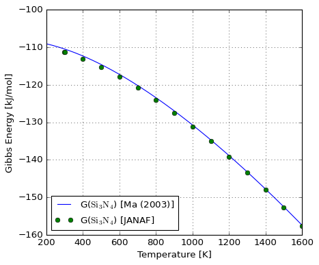

Gibbs energy analysis of \(Si_3N_4\) and \(MnSiN_2\)#
Data was retrieved and manually prepared from extractions made from NIST JANAF tables.
from pathlib import Path
from majordome import MajordomePlot
import numpy as np
import pandas as pd
import requests
Database creation#
media = Path(".").resolve().parent / "media" / "janaf"
media.exists()
True
def file_name(url, media=media):
""" Get file name from URL by spliting path. """
return media / url.split("/")[-1]
def download_url(url, saveas):
""" Download a table from URL if required. """
if (response := requests.get(url)).status_code != 200:
print(f"Unable to retrieve data from {url}")
return
with open(saveas, "w", encoding="utf-8") as f:
f.write(response.text)
def compose_database(files):
""" Ensure data files are available locally. """
for url in files.values():
if not (fname := file_name(url)).exists():
download_url(url, fname)
Data loading#
def get_headers(fname):
""" Retrieve data headers from second line. """
return pd.read_csv(fname, sep="\t", nrows=0, skiprows=1).columns
def load_database(files):
""" Load all required files for analysis. """
compose_database(files)
db = {}
for species, url in files.items():
fname = file_name(url)
columns = get_headers(fname)
ncols = len(columns)
df = pd.read_csv(fname, sep="\t", skiprows=2, header=None)
df = df.iloc[:, :ncols].copy()
df.columns = columns
db[species] = df
return db
Process database#
def get_hser(df, Tr=298.15):
""" Get formation enthalpy at reference temperature. """
return float(1000*df.loc[df["T(K)"] == Tr]["delta-f H"].iloc[0])
def process_data(df, query=None):
""" Load file and make transformations. """
# Make sure no INFINITE or anything else remains in data:
for col in df.columns:
df[col] = pd.to_numeric(df[col], errors="coerce")
# Some missing data on top of some files, fill with zero.
df.fillna(0.0, inplace=True)
# In JANAF the reference enthalpy is 298.15K, while for CALPHAD
# we must use 0K to retrieve a non-zero enthalpy at 298.15K.
# Below we perform this shift to ensure compliance.
df["H"] = 1000 * (df["H-H(Tr)"] - df["H-H(Tr)"].iloc[0])
# To get GHSER as in CALPHAD we add a column as below. Notice
# that because of JANAF definition of H(Tr) we need to add the
# formation enthalpy to get the CALPHAD compatible value.
df["GHSER"] = -1 * df["-[G-H(Tr)]/T"] * df["T(K)"]
df["GHSER"] += get_hser(df)
if query is not None:
df.query(query, inplace=True)
return df.reset_index(drop=True)
def load_process_data(files, query=None):
""" Load database and apply processing workflow. """
return {s: process_data(df.copy(), query=query)
for s, df in load_database(files).items()}
Analysis#
Because of different conventions of reference state, it can be tricky to figure how to use JANAF data to check CALPHAD parameters.
Below we make a try to find the required transformations. External data for \(Si_3N_4\) comes from Ma (2005).
janaf = "https://janaf.nist.gov/tables"
query = "(`T(K)` >= 298) & (`T(K)` <= 1600)"
files = {"N2": f"{janaf}/N-023.txt",
"Si": f"{janaf}/Si-001.txt",
"Si3N4": f"{janaf}/N-035.txt"}
db = load_process_data(files, query=query)
tab_nn2si0 = db["N2"]
tab_nn0si1 = db["Si"]
tab_nn4si3 = db["Si3N4"]
The value of \(G-H(SER)\) has been fixed in JANAF data and must now be compatible with the polynomial by Ma (2003).
Because Ma (2003) reports Gibbs energy per mole of atoms and not per CEF unit formula, we divide the values by 7 (3 Si + 4 N).
@MajordomePlot.new(size=(6, 5), xlabel="Temperature [K]",
ylabel="Gibbs Energy [kJ/mol]")
def plot_gibbs_si3n4(T1, T2, G1, G2, plot=None):
_, ax = plot.subplots()
sym = r"\text{Si}_3\text{N}_4"
ax[0].plot(T1, G1, "-", label=f"G(${sym}$) [Ma (2003)]")
ax[0].plot(T2, G2, "o", label=f"G(${sym}$) [JANAF]")
ax[0].set_xlim(200, 1600)
ax[0].legend(loc=3, fontsize=12)
def compute_gibbs_si3n4():
T = np.linspace(200, 1600, 1000)
T2 = tab_nn4si3["T(K)"]
GSI3N4 = -788513.009+733.225*T-121.79*T*np.log(T)\
-0.02065*T**2+1666886.4*T**(-1)+6.9938E-7*T**3
GSI3N4_2 = tab_nn4si3["GHSER"].copy()
GSI3N4 /= 7
GSI3N4_2 /= 7
plot_gibbs_si3n4(T, T2, GSI3N4/1000, GSI3N4_2/1000)
compute_gibbs_si3n4()

Below we reproduce partially Fig. 6 from Ma (2003).
Application to \(MnSiN_2\)#
WORK IN PROGRESS
@MajordomePlot.new(size=(6, 5), xlabel="Temperature [K]",
ylabel="Gibbs Energy [kJ/mol]")
def plot_gibbs_mnsin2(T, G1, G2, plot=None):
_, ax = plot.subplots()
sym = r"\text{MnSiN}_2"
ax[0].plot(T, G1, label=f"G(${sym}$) [Matcalc]")
ax[0].plot(T, G2, label=f"G(${sym}$) [JANAF]")
ax[0].set_xlim(200, 1600)
ax[0].legend(loc=3, fontsize=12)
T = np.linspace(200, 1600, 1000)
GHSERMN = np.piecewise(T, [T < 1519.0, T >= 1519.0], [
lambda T: -8.115280e+03+1.300590e+02*T-2.34582e+01*T*np.log(T)\
-7.347680e-03*T**2+6.98271e+04*T**(-1),
lambda T: -2.873341e+04+3.122648e+02*T-4.80000e+01*T*np.log(T)\
+1.6568470+30*T**(-9)
])
GHSERNN = np.piecewise(T, [T < 950.00, (950.00 <= T) & (T < 3350.00), T >= 3350.00], [
lambda T: -3.750675e+03-9.45425e+00*T-1.27819e+01*T*np.log(T)\
-1.76686e-03*T**2+2.680735e-09*T**3-3.237400e+04*T**(-1),
lambda T: -7.358850e+03+1.72003e+01*T-1.63699e+01*T*np.log(T)\
-6.51070e-04*T**2+3.009700e-08*T**3+5.630700e+05*T**(-1),
lambda T: -1.639280e+04+5.02600e+01*T-2.04695e+01*T*np.log(T)\
+2.39754e-04*T**2-8.333100e-09*T**3+4.596375e+06*T**(-1)
])
GHSERSI = np.piecewise(T, [T < 1687.0, T >= 1687.0], [
lambda T: -8.162609e+03+1.37236859e+02*T-2.28317533e+01*T*np.log(T)\
-1.912904e-03*T**2-3.552E-9*T**3+1.76667e+05*T**(-1),
lambda T: -9.457642e+03+1.67281367e+02*T-2.71960000e+01*T*np.log(T)\
-4.203700e+30*T**(-9)
])
# HSERMN = 4.995696E+03
# HSERSI = 4.335000E+03
# HSERNN = 3.217000E+03
# (0.25*HSERMN+0.25*HSERSI+0.5*HSERNN)
hypothesis_scale = 10
G_sum_xk_Gk = 0.25*GHSERMN+0.25*GHSERSI+0.5*GHSERNN
G_form_MNSIN2_MC = -86500.0+43.0*T
G_form_MNSIN2_LI = np.piecewise(T, [T < 980.0, T >= 980.0], [
lambda T: -994489.0 + 454.0*T,
lambda T: -970238.0 + 429.0*T
]) / hypothesis_scale
G_MNSIN2_MC = G_sum_xk_Gk + G_form_MNSIN2_MC
G_MNSIN2_LI = G_sum_xk_Gk + G_form_MNSIN2_LI
plot_gibbs_mnsin2(T, G_MNSIN2_MC, G_MNSIN2_LI)
<majordome.plotting.MajordomePlot at 0x20fffa574c0>